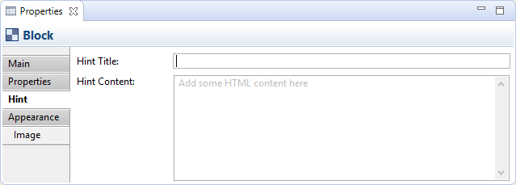
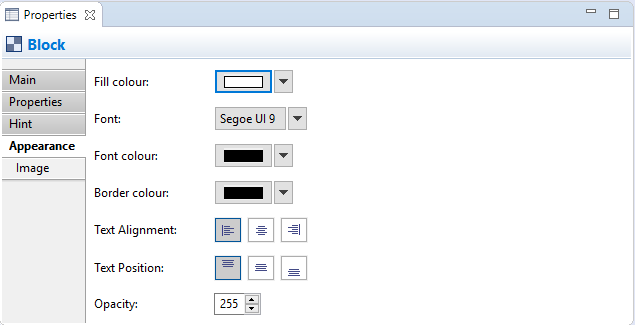

A Block object is a container area that can contain text and an icon. You can also provide your own Help Hints. You can lock the Block if you want to make it read-only. A typical scenario is to create a number of container Blocks on the Canvas, arrange them into the desired framework, lock them, and then save the Canvas as a template.
Properties
Selecting a Block in a Canvas View means that you can edit or view the following properties in the Properties window.
The Main Tab

Main Properties for a Canvas Block
| Locked: | Selecting this ensures that the Block cannot be moved or edited. |
| Content: | A space to enter some text content for the Block. The text will show up in the Block. |
The Properties Tab
For more information about creating and managing User Properties see User Properties.
The Hint Tab
Hint Properties for a Canvas Block
| Hint Title: | The title of the Hint to be displayed in the Hints window when the Block is selected. |
| Hint Content: | A space to enter some text content for the Hint to be displayed in the Hints window when the Block is selected.. HTML tags are permitted. |
The Appearance Tab
Appearance Properties for a Canvas Block
| Fill colour: | Sets the fill colour for the selected object. The "Default" button sets the fill colour to the default setting. |
| Fill Opacity: | Set the fill opacity of the figure. Range from 0-255. |
| Border Colour: | Sets the colour of the border used for the selected object. The "None" button removes the border from the object. |
| Line Width: | Sets the width of the border line. Options are "Normal", "Medium", and "Heavy". |
| Line Opacity: | Set the line opacity of the figure. Range from 0-255. |
| Text Alignment: | Align text in the selected object to Left, Centred or Right. |
| Text Position: | Align text in the selected object to Top, Middle or Bottom. |
| Font: | Sets the font used for the text in the selected object. The "Default" button sets the font to the default setting as set in Preferences. |
| Font Colour: | Sets the colour of the font used for the text in the selected object. The "Default" button sets the font colour to the default setting. |
The Image Tab

Image Properties for a Canvas Block
| Preview: | A preview image that shows how the image will appear. Canvas Block images are resized to a maximum width and height of 100 pixels. Double-clicking the Preview box will launch the Image Chooser dialog window. You can also drag and drop an image file from the desktop onto the Preview box. |
| Image: | Select an image for the object or clear the image. See "Adding Images to Objects" for more details |
| Position: | Sets the position of the image relative to the object. |